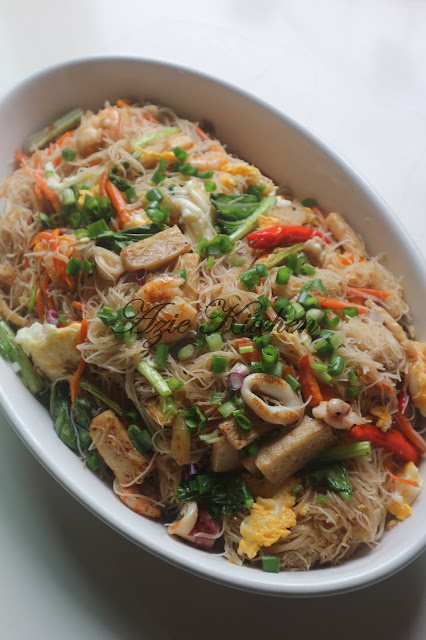
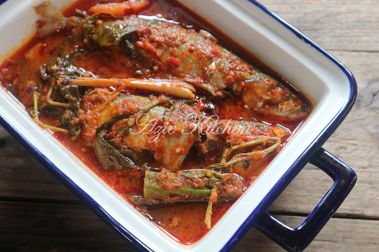
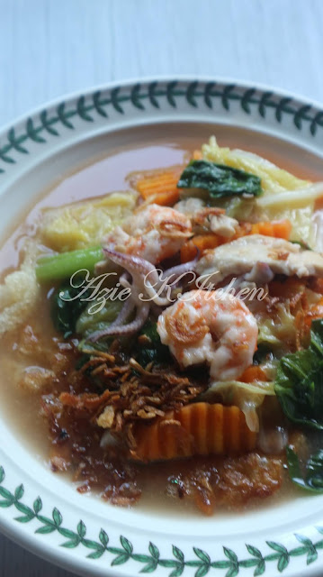
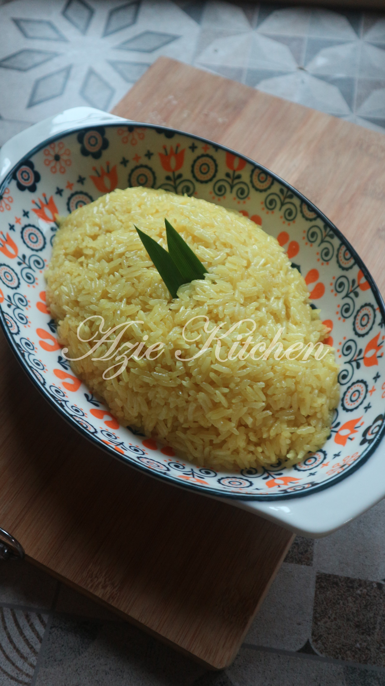
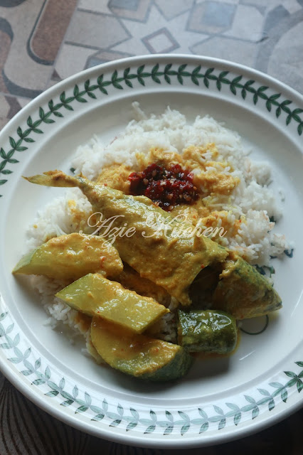
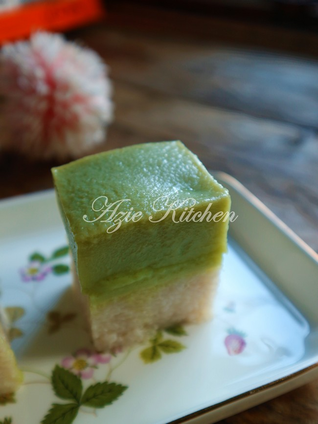
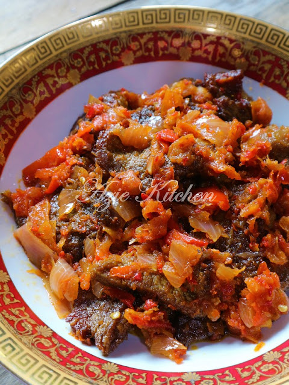

Mee Hoon Goreng Putih
Tak guna cili kering, hanya guna serbuk lada hitam untuk memberi perasa pedas dan perisa, ia lebih mudah dan cepat.

Asam Pedas Ikan Kembung
Ikan kembung yang selalu dijadikan gulai ikan mahupun goreng sahaja, kini boleh divariasikan cara masakan dengan membuat asam pedas

Kuey Teow Kungfu
Boleh memeriahkan dengan pelbagai jenis lauk seperti udang, sotong, ayam, daging dan juga telur. Buat sendiri lagi sedap.

Pulut Kuning Lembut Cantik Berkilat
Pulut kuning lembut cantik berkilat memang lembut, lagi lah sedap. Makan bersama rendang ayam atau daging bersama keluarga tersayang lagi sedap.

Gulai Kuning Kunyit Lengkuas
hanya perlu masak ikan biasa seperti ikan selayang atau lolong untuk gulai kuning dan lebih sedap dimakan bersama sambal nasi berlauk

Kuih Seri Muka Istimewa Azie Kitchen
Rasa yang sangat memuaskan hati bukan sahaja kejadiannya cantik tapi rasanya memang terbaik dan ianya sangat sedap dan sangat sesuai dengan selera semua orang.

Daging Dendeng Berlada
Cili merah lagi banyak lagi sedap dan boleh dibuat sebagai sambal masak seperti sambal masakan nasi padang.
ABOUT US
POPULAR TAGS
Srimuka
Puding
Aneka Kuih
Keria
Sagu
Kuih Bakar
Cekodok
Bingka
Apam
Talam Berlauk
Mee Bandung
Mee Hailam
Kuey Teow
Mee Hoon
Sup Tulang
Soto Ayam
Mee Kari
Aneka Mee
Maggie Goreng
Pulut
Tepung Bungkus
Daging
Ideas
Nasi Kerabu
Ikan Bakar
Ikan Sambal
Asam Pedas
Ikan Kerapu
Mee Bandung
Mee Hailam
Kuey Teow
Mee Hoon
Sup Tulang
Soto Ayam
Mee Kari
Aneka Mee
Maggie Goreng
Goreng Basah
Laksa
Yee Mee
Ayam
Dendeng
Kari
Gulai
Masakan Melayu